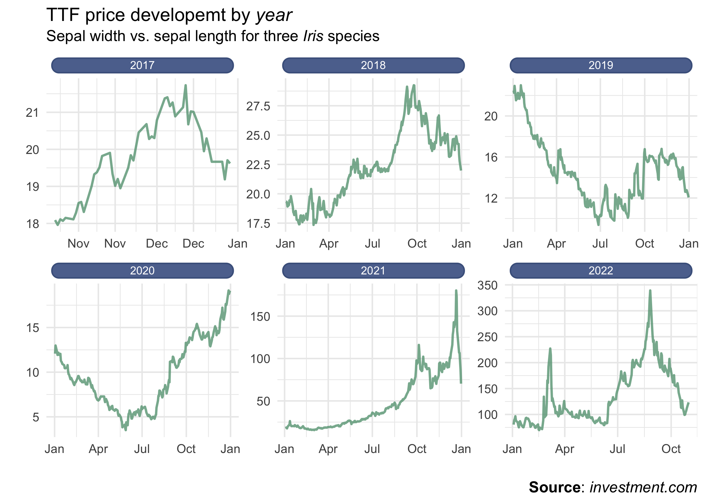

theme_ben <-function(base_size =14) {theme_minimal(base_size = base_size) %+replace%theme(# L'ensemble de la figureplot.title =element_text(size =rel(1), face ="bold", margin =margin(0,0,5,0), hjust =0),# Zone où se situe le graphiquepanel.grid.minor =element_blank(),panel.border =element_blank(),# Les axesaxis.title =element_text(size =rel(0.85), face ="bold"),axis.text =element_text(size =rel(0.70), face ="bold"),axis.line =element_line(color ="black", arrow =arrow(length =unit(0.3, "lines"), type ="closed")),# La légendelegend.title =element_text(size =rel(0.85), face ="bold"),legend.text =element_text(size =rel(0.70), face ="bold"),legend.key =element_rect(fill ="transparent", colour =NA),legend.key.size =unit(1.5, "lines"),legend.background =element_rect(fill ="transparent", colour =NA),# Les étiquettes dans le cas d'un facettingstrip.background =element_rect(fill ="#17252D", color ="#17252D"),strip.text =element_text(size =rel(0.85), face ="bold", color ="white", margin =margin(5,0,5,0)) )}
Problem
We have the last year seen a spike and Natural Gas prices for EU (TTF) and with a enormous volatility. It has left several industrices that use gas for heating and manufacturing gone out of business because they cannot pay their bills and it has the same effect on the indicidual households.
For many decision maker it is important to know why this is happening so they can make better decision on who they coorporate with. So for this analysis I would like to look into the reason why we are seeing this increase so a Politican can come up we ideas to where we can change our energy ressources.
Data
The data is collected from professionel in the trader field so it is in mu opinon relaiable. We can extract the dta from multiple places but with a fee. I have focus on the free sources which can be bad so it is not original. Therefore the data is not comprehensive beacuse you can get better institution where the data given can be questions.
Process
I am going to use R for the cleaning. Beacuse it is not so far a very complicated data I have only transformed the date column to a date class. While importing the data it started out being a character.
Data is from a respect side for making analysis of the trzder market. The could be a problem with the intrigity of the data, but if that was the case the whole side would be seen as unreilable. Therefore it would be a bad business if they did not secure the data and check if the data is correct.
Because of the volatility of the Gas prices I will make a log transformation of the data to remove some of the variance. It is a better way of removeing some of the variance so it is easier to remove some outlier for a time series data.
I include two new features; year and month that help us investigate if the diffrece in the prices can be seen in the some period.
YAMAL Event: The Yamal–Europe natural gas pipeline is a pipeline connecting Russian natural gas fields in the Yamal Peninsula and Western Siberia with Poland and Germany, through Belarus. In this period since Dec. 21, the link between Poland and Germany had been operating in reverse mode, carrying gas from west to east and putting upward pressure on European gas prices.
Russia invades Ukraine: TTF price made huge gains in early trade Feb. 24 after Ukraine said Russia had launched a full-scale invasion of the country. The raise was because of the markets concern over potential disruption to Russian gas deliveries to Europe amid low storage stocks.
Russias thread: Russia threatened to cut natural gas supplies to Europe via the Nord Stream 1 pipeline as part of its response to sanctions imposed over the invasion of Ukraine, a move that could heighten the turmoil in energy markets and drive consumer prices even higher.
Nord Stream cuts: Russia annoce that Nord Stream 1 would stay shut indefinitely, stoking renewed fears about shortages and gas rationing in the European Union this winter.
After this event we have seen a decline in the prices. This is for further investigation.
Conclusion
EU has over the years relied heavely on Russia delivering gas. After the invading and conflict EU has had no alternativ to Russia. Therefore it is of most importance to find other ressources to either get the Gas or alternatives energy ressources.
Appendix
Using R enviroment renv
Packages alway changes so it is important to make sure that the package you used in a start is lock on some version.
Another benefit is for other can easy use the same packge you just have used.
For this we use the package renv. The first we nned to use initalise, where we see what pakcge we use and looks into the files with code where we have used library. It creates the dependency used for a given projects.
renv::init()
Take a and lock the package version with this function.
renv::snapshot()
We can restore to the old packages version with `renv::``
With .libPaths we can see that for the projects we are using the packages in the enviroment of renv. If we are outside of the enviroment then we wil take from the default.
ttf_by_date %>%group_by(year) %>%ggplot() +geom_line(aes(x = date, y = value), colour ='#66a182', size =0.8) +facet_wrap(~year, scales ="free") +scale_x_date(date_labels ="%b") +labs(title ="TTF price developemt by *year* <span style='font-size:11pt'>Sepal width vs. sepal length for three *Iris* species</span>",x ="", y ="",caption ="<b>Source</b>: *investment.com*" ) +theme(plot.title =element_markdown(lineheight =1.1),legend.text =element_markdown(size =11),plot.caption =element_markdown(size =11),strip.text =element_textbox(size =8,color ="white", fill ="#5D729D",box.color ="#4A618C",halign =0.5, linetype =1,r =unit(5, "pt"),width =unit(1, "npc"),padding =margin(2, 0, 1, 0),margin =margin(4, 4, 4, 4) ) )

Energi Market
Spot market
The spot market is where financial instruments, such as commodities, currencies, and securities, are traded for immediate delivery. Delivery is the exchange of cash for the financial instrument
Future market
A futures contract is a legal agreement to buy or sell a particular commodity asset, or security at a predetermined price at a specified time in the future.